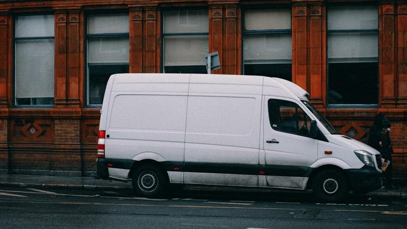
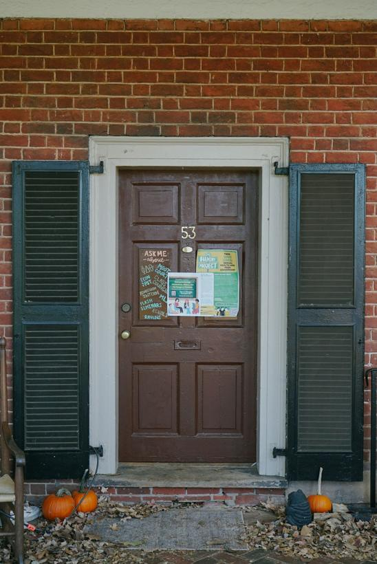
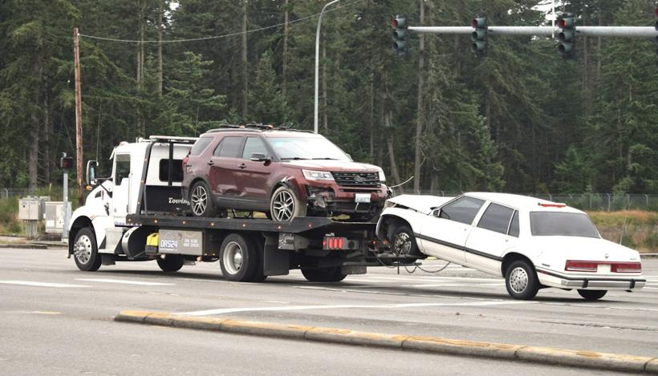
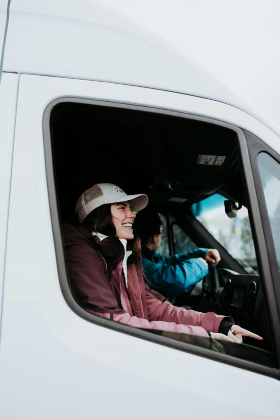
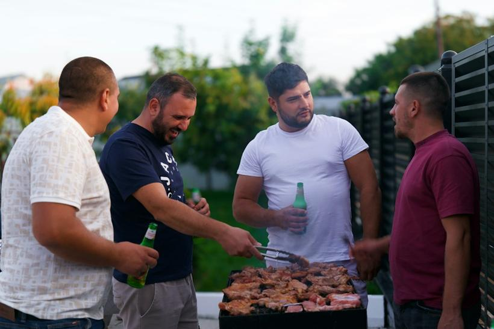
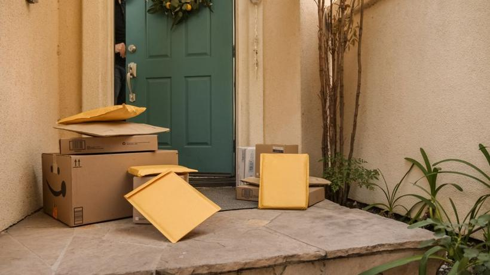
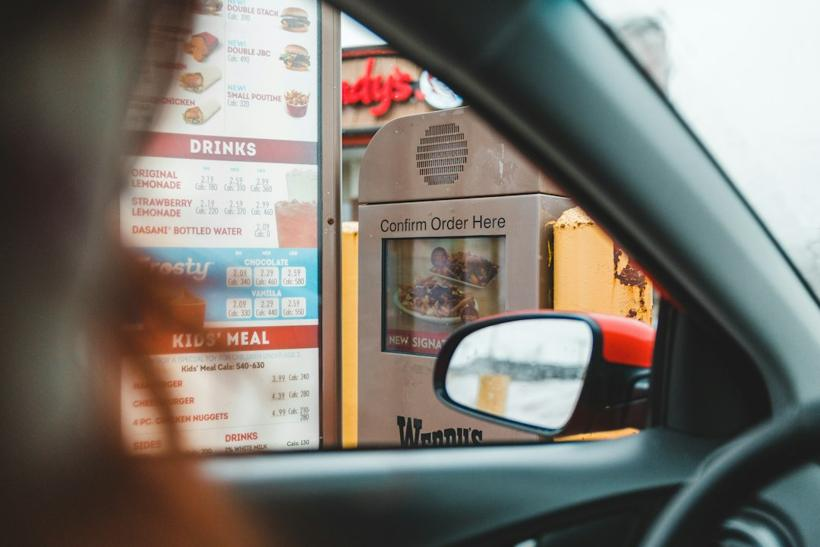

Class 1: Customer calls — open a call without freezing ✓
Class 2: Gate codes & tracking numbers ✓
Class 3: Eating out — order without avoiding it ✓
Class 3.5: Tricky words — tough, though, through ✓
Class 4: Reading 1 — A day on the route ✓
Class 5: Reporting your shift — tell it in the past ✓
Class 6: When it went wrong — report a problem in the past
Class 7: Weekend stories — tell what happened
Class 8: Reading 2 — Camila's worst Tuesday
Class 9: Who you work for — for, at, in, on
Class 1
Customer calls: pick up the phone and open a call without freezing
By the end of this class, you can take a customer call, buy yourself time in English, and get the caller's reason without asking them to repeat.
Critical Thinking · 1 of 3
Why do you think talking on the phone is harder than talking face-to-face?
Critical Thinking · 2 of 3
When a customer is annoyed, what do they actually want — the package, or something else?
Critical Thinking · 3 of 3
If you woke up speaking perfect English tomorrow, you said you'd get another job. What would that job need you to say on a phone that your job today doesn't?
Say It Better · 1 of 3
You already say this. There's a sharper version.
"…just in weird cases."
exceptions · special cases "Most of the time they don't need to sign — just in exceptions."
Say It Better · 2 of 3
Precise beats vague — especially on a call.
"Sometimes I get like problems."
I run into issues · something comes up "Sometimes I run into issues on the route."
Say It Better · 3 of 3
"Like" is doing too much work. Give it a better replacement.
"I deliver like 180 packages."
around 180 · roughly 180 · about 180 Keep "like" for real comparisons — use these for numbers.
Build The Chunk · 1 of 2
Tap the pieces in order, then check your sentence:
Build The Chunk · 2 of 2
Tap the pieces in order, then check your sentence:
Race It · 45 seconds
Your coach says the situation. You fire the phrase — out loud, under two seconds. No Spanish.
You don't know the answer → You need to end the call and find out → You're about to put them on hold → You want to warn them about a delay →
45
Phrase Bank · 1 of 3
A customer asks something you don't know the answer to, and you need a second to look it up. What do you say?
Let me check on that.
Phrase Bank · 2 of 3
Someone proposes a plan — a time, a place, a solution — and you're happy with it. What do you say?
That works for me.
Phrase Bank · 3 of 3
You're warning someone that something is coming — a delay, a change, a problem they'll hit. What do you say first?
Heads up…
You say this before the news, not after. "Heads up — the gate code changed."
…call
the the the
customer
…call
let me think
the customer
Meet Fix
The repeat is a stall
When you say "the the the customer," you're buying yourself a second to think. That's normal — you just don't have an English tool to buy it with yet. So you reach for the nearest word and repeat it.
Meet Fix · Say it out loud
Swap the repeat for a real chunk
hold on · let me think · give me one second · so…
Your coach asks six fast questions. Don't repeat a word to stall — use one of these instead, then answer.
English speakers stall out loud, with words. Spanish stalls by repeating. Sounding natural here isn't extra vocabulary — it's swapping which filler you reach for.
Ask It Softer
Same request, three levels. A customer expects the softer ones.
Can you check the side gate? Could you check the side gate? Would you mind checking the side gate?
After would you mind, the verb takes -ing: would you mind checking, would you mind holding.
CORE · Round 1 — Build It
Camera off · voice only
Three calls, one after another. No video — no lips, no gestures. Just the voice, like the real thing.
1. "Is my package coming today?" 2. "Can you leave it with my neighbor?" 3. "You marked it delivered and it's not here."
All three must land during the round: Let me check on that. That works for me. Heads up…
CORE · Round 2 — Under Pressure
Same three calls. Faster. No repeats, and you'll get interrupted once.
You may ask for a repeat once per call — after that, work with what you heard.
90
Pronunciation · Linking · 1 of 3
This is…
Not "this — is". One word: thisiz. "Thisiz Danna with Amazon."
Pronunciation · Linking · 2 of 3
Give me
Say it as gimme — "Gimme one second." Same with let me → lemme.
Pronunciation · Intonation · 3 of 3
I'll get back to you ↘
Let your voice fall at the end. Rising makes it sound like you're asking permission — falling makes it a promise.
Real Call
A customer says their package was marked delivered — but it isn't there.
You run your side. Use your three phrases, ask them to check a second place, and close with a promise.
You: I'm sorry about that. Let me check on that for you — give me one second. You: It says it was left at the front door at 2:15. Could you check the side gate as well? You: Heads up — it may still be on the truck. I'll get back to you before the end of my route.
Check Yourself · 1 of 2
You asked the customer to check two places. Why the second one?
Because drivers use the side gate when the front is blocked — so it's the most likely second spot. Giving a reason makes the request sound helpful instead of dismissive.
Check Yourself · 2 of 2
You never said "I don't know" — but you didn't know. What did you say instead?
"Let me check on that." That's the whole trick. You don't need the answer — you need a sentence that buys you the time to find it.
From Last Session
It turns out… Use it once when you explain what happened with the package.
Same old, same old. For when someone asks how work's going and nothing has changed.
Homework
1. Record one voice memo to yourself on WhatsApp: take an imaginary customer call, 60 seconds, out loud. Use all three phrases. Do it in the van before you start.
2. Listen for one real "heads up" this week — a coworker, a video, anything. Write down who said it and what was coming.
3. One line in your notebook: the moment this week you needed a word and didn't have it. Bring it to Class 2.
Nice work today.
You didn't freeze once on the phone. See you at Class 2.
Teacher's Station · The Milestone Method
Class 2
Gate codes & tracking numbers: say and confirm digit strings without getting them wrong
By the end of this class, a customer can give you a gate code once and you read it back correctly — and when a dispatcher reads your tracking number back wrong, you stop them and fix it.
Open With A Win
Pick up a call. You're on the route, I'm the customer. Just the opening line — "This is Danna with Amazon, I'm calling about your delivery…"
You already did three of these last class. This is the warm-up, not the test.
Critical Thinking · 1 of 3
When a customer reads you a gate code fast and you're driving, what do you actually do right now? Walk me through it.
Critical Thinking · 2 of 3
Is it ruder to ask someone to repeat a number, or to guess and get it wrong? Why?
Critical Thinking · 3 of 3
On a phone call, what makes someone sound like they're in control of the call, not just surviving it?
Phrase Bank · 1 of 3
You're holding the phone with your shoulder, trying to grab a pen — instead of going silent or repeating a word, what do you say?
"Bear with me for a sec."
Say this instead of "the… the… the". It buys you the same time without sounding stuck.
Phrase Bank · 2 of 3
You've written a code down and you want to confirm it before you act on it. What do you say?
"Let me read that back to you."
Then say the digits grouped, with a beat between each.
Phrase Bank · 3 of 3
You're double-checking a digit string mid-call and you don't want to sound unsure. What do you say?
"Just to be sure — that's 4-4-7, right?"
Land it on a confirm, not a question in your voice. Falling tone on the last digit.
Pronunciation · Digit Grouping
4 — 4 — 7
A code is not one long word. Tiny beat between each digit, falling tone on the last one — settled, not asking.
Now this one: "oh — five — three — eight." Say it back grouped.
Pronunciation · 13 vs 30 · Hear It
-teen = stress on the second part (thir-TEEN). -ty = stress on the first (THIR-ty), often "thur-dee". Tap each, call it out.
Meet Fix · Read It Back
Listen once. Capture it. Read it back.
Say: "Bear with me for a sec" → write it → read it back grouped → "So that's 6-2-9-4, right?"
Gate code: 6 — 2 — 9 — 4. Grouped, falling tone on the 4.
Meet Fix · The Trap
One of these two numbers is easy to hear wrong
What's the unit number — and which one did the last driver get wrong?
Unit 30 (THIR-ty), not 13 (thir-TEEN). If you're not sure, that's exactly when you say: "Did you say 13 or 30?"
CORE · Round 1 — You Receive
Camera off · voice only
Three short calls. Each has one number, said once. Capture it without "say that again", read it back, confirm with a frame. Land all 3 Phrase Bank phrases across the set.
CORE · Round 2 — You Run The Call
You call the dispatcher · they read it back wrong
You're confirming a delivery address and access code. The dispatcher reads it back wrong at least twice — swaps two digits, says "fifty" for "fifteen". Stop them and fix it: "Sorry — did you say 15 or 50? It's five-oh."
Real Call — Answer Key
A customer's package needs a code to get through the building's front gate. Build your side first — open this only if you stall.
Customer: Hi, do you have the gate code? The last driver couldn't get in. You: Hi, this is Danna with Amazon. Let me check… I don't see a code on the order. Can you give it to me now? Customer: Sure, it's 0-5-3-8. You: Bear with me for a sec while I write it down… Let me read that back: oh — five — three — eight. So that's 0-5-3-8, right? Customer: That's it. You: Got it. Just to be sure — front gate or parking garage? Customer: Front gate. You: Perfect. It turns out I've got about 40 stops before yours, so early afternoon. I'll leave it at the door and send a photo.
Check Yourself · 1 of 2
Why did Danna say "bear with me for a sec" — what was she doing?
Check Yourself · 2 of 2
She asked one extra question the customer didn't expect. What was it — and why does asking it make her sound more in control?
From Last Session
Fit each into a sentence about your route today — don't stop to define them: no wonder · it turns out · out of the ordinary.
Homework
1. Voice memo to your own WhatsApp (~20s): a fake voicemail — "This is Danna with Amazon… the gate code you gave me is ___. Let me read that back: ___. Call me back at ___." Say every number grouped.
2. While driving, say these out loud, 5 rounds each: 13/30, 15/50, 14/40, 19/90.
3. Notebook the 3 phrases — for each, write the English situation ("I say this when…"), not the Spanish.
4. Playphrase.me: search "read it back" — write down 2 real examples.
Nice work today.
Bring the voicemail recording — Class 3 opens with it. See you at Class 3.
Teacher's Station · The Milestone Method
Class 3
Eating out: order food and answer "how do you want it?" without avoiding the situation
By the end of this class, you can walk into a restaurant, order a full meal, answer "How do you want it?" without freezing, change your mind out loud — and send something back, politely.
Open With A Win
Play me the voicemail you recorded. Then I'll give you one code out loud and you read it straight back — grouped, with a beat.
You already ran three of these calls last class. This is the warm-up, not the test.
Critical Thinking · 1 of 3
You've lived here five years. Name one thing you still do the Mexican way on purpose — and one thing you've switched over completely without noticing.
Critical Thinking · 2 of 3
Which is ruder: asking someone to repeat themselves three times, or pretending you understood and getting it wrong? Pick one and defend it.
Critical Thinking · 3 of 3
You get the job with more English interaction tomorrow. What's the first situation you'd be nervous about — and be honest: is that a language problem or a people problem?
Listening · Read It Back
Look away from the screen. Each one plays once.
Read each one back grouped, with a beat — not one long word. No "say that again".
Confirmation: 4 — 7 — 0 — 2 The wait: fifteen (thirTEEN family), not fifty The total: $34.19 — "thirty-four nineteen"
Vocabulary · The Doneness Ladder
Five words, least cooked to most cooked. Tap each, say it back.
Meet Fix · Fire It
No thinking. Pick one and say it.
Three times, faster each time. Same answer every time is fine — that's the point. Your default is medium.
If you genuinely want a second to think, you already have the tool: "Give me one sec."
Say It Better
Kill the word "very". Say each of these a better way, out loud, before you open the key:
the food was very good · the soup came very cold · that place is very expensive · I'm very full · the service was very bad
very good → delicious · amazing · so good very cold → freezing · stone cold very expensive → pricey · a rip-off very full → stuffed very bad → awful · terrible · nasty
Phrasal Verbs
Fire the right one at each situation — say it in a full sentence:
1. It's your day off, you don't want to cook, you don't want to leave the house. 2. You and your sister decide to go to a restaurant tonight. 3. You've got 20 minutes between stops and you're starving. 4. You and your boyfriend each pay your own part of the bill.
1. order in — have food delivered to the house 2. eat out — go to a restaurant instead of cooking 3. grab a bite — eat something quick 4. split the check — each person pays their share
Phrase Bank · 1 of 3
Someone offers you something and you want to say no — a refill, dessert, a bag, more bread. You don't want to sound negative. What do you say?
"I'm good, thanks."
It does not mean "I am a good person." It's the friendly American no — you say it when someone offers and you don't want it.
Phrase Bank · 2 of 3
You already ordered the fish. You've decided you want the chicken. How do you change it out loud — calmly, without apologising?
"Actually, on second thought…"
This is your exit from anything you already said. You are allowed to change your mind out loud.
Phrase Bank · 3 of 3
You need the server's attention — water, the check, a napkin — and you don't want to feel rude. What do you say?
"Whenever you get a chance…"
Gentle, falling tone — it's not a question. This is how you get someone's attention without feeling like you're demanding it.
Meet Fix
The question you've been avoiding
"How do you want it?" has kept you out of restaurants. Not because it's hard English — because it arrives fast and you have nothing banked to answer it with. So you avoid the whole situation instead of the one question.
Meet Fix · Your Two Tools
1. A default. One word you say every time unless you want something else — medium.
2. A stall. If you want a second to think: "Give me one sec."
You already used the stall in a real call last class, without being asked. It covers this question too. You will not be asked something you don't have an answer for.
The Shape
Three openers. Everything you ask a server for starts with one of them.
I'll havethe steak, medium.
Could I getthe dressingon the side?
I'd likea water, please.
Answering "Would you like…?" → "I'd love to" (yes) or "I'm good, thanks" (no).
I wantthe chicken.
↓
Could I getthe chicken?
The Trap
"I want the chicken" is perfect grammar and lands as a demand. The politeness lives in the opener — not in "please". Adding "please" to "I want" doesn't rescue it.
Check It · Say It, Then Build It
Say the fix out loud first:
1. "I want a coffee with milk." 2. "Give me the check." 3. "I want that the sauce comes separate." 4. Server: "Can I get you anything else?"
1. "Could I get a coffee with milk?" 2. "Could we get the check, whenever you get a chance?" 3. "Could I get the sauce on the side?" 4. "I'm good, thanks."
Now build it — tap in order:
CORE · Stage 1 — Guided
I'm your server. Straightforward dinner.
Order four things: a drink · a main · one modification · a doneness. I'll stop you the moment something slips and you say the whole sentence again.
CORE · Stage 2 — On Your Own
Busy place · the server isn't looking at you
Three things have to happen:
1. Get his attention → "Whenever you get a chance…" 2. Order, then change your mind halfway → "Actually, on second thought…" 3. Answer the doneness question with no hesitation.
CORE · Stage 3 — The Real One
Something goes wrong
You ordered medium. It arrives well done. Send it back — politely — to a server who is perfectly nice and a little busy.
Then: he offers dessert (decline it), he asks for a number to text you, and you ask to split the check.
Pronunciation · Request or Demand
Same words. The tone decides whether it's a request or an order. Tap both, hear the difference, then say each one back.
"Could I get the check?"
This one is the exception — "Whenever you get a chance" stays gentle and falling. It's not a question.
The Real Thing — Answer Key
Your day off. You're eating out with your boyfriend and the steak comes back wrong. Build your side first — open this only after.
Server: Hey, how's everything tasting over here? You: Hi — actually, could I ask you something? I ordered this medium and I think it came out well done. Server: Oh no, I'm sorry about that. Let me take a look… yeah, you're right. I'll get that fixed right away. You: Thank you. No rush, I'm not in a hurry. Server: Can I get you anything while you wait? Another drink, maybe? You: I'm good, thanks. Actually — on second thought, could I get a water? Server: Of course. And are we saving room for dessert tonight? You: I'm good, thanks. But whenever you get a chance, could we get the check? We're splitting it. Server: Absolutely, I'll bring two.
Check Yourself · 1 of 2
The server says "I'll get that fixed right away." What is he actually going to do — bring a brand-new steak, cook this one longer, or take it off the bill? How do you know?
Check Yourself · 2 of 2
You say "I'm good, thanks" twice. Does it mean the same thing both times? What's the difference between the two moments?
Fast Fire
One sentence each, no stopping to define them:
Your dad cooked dinner → out of the ordinary She didn't sleep → no wonder You thought the place was closed, but → it turns out
Homework
1. Voice note, 45 seconds. Order a full meal out loud — drink, main, one modification, the doneness — then decline dessert. Send it to me. Class 4 opens with it.
2. Pigeonary with ChatGPT voice mode, 20 min — food and restaurant words only this time. Class 4's reading runs on this vocabulary.
3. By hand, autocorrect off. The 3 phrases — for each, write the English situation ("I say this when…") plus one real sentence from your week. Not the meaning. Not Spanish. Photo to me.
That was the one you've been avoiding.
Bring the voice note — Class 4 opens with it. See you at Class 4.
Teacher's Station · The Milestone Method
Class 3.5 · Tricky Words
Tough, though, thought, through: seven words that look the same and sound nothing alike
By the end of this class, you can say all seven "-ough" words correctly, tell them apart when you hear them, spell the ones that trip everyone up, and use them to tell a real story about your route.
Critical Thinking · 1 of 3
In Spanish, you can read almost any word out loud the first time you see it. English doesn't work like that. Is that a problem with English, or just a different system? Defend your answer.
Critical Thinking · 2 of 3
Which is worse for you: a word you can say but can't spell, or a word you can spell but can't say? Where does each one hurt you in real life?
Critical Thinking · 3 of 3
What's the hardest part of your route: the weather, the customers, the addresses or the clock? Why that one?
The Family · Same Letters, 7 Sounds
Don't read the letters. Remember the word it rhymes with.
tough= stuffhard, difficult
though= gobut / despite
thought= caughtpast of think
taught= caughtpast of teach
through= blueacross, in → out
thorough= THUR-ohcomplete, careful
throughout= thru-OUTstart to end
Only tough has no TH. Only though buzzes (like "the").
Pronunciation · Listen & Repeat
Tap, listen, and say it back three times. Think of the rhyme word first.
Throughout: the stress goes on OUT. through-OUT.
Meet Fix · The Three Traps
1. thought vs taught. Same vowel, same rhyme. Only the first sound changes. Tongue between your teeth = thought (think). Tongue behind your teeth = taught (teach).
2. through = threw. Same sound. threw is the past of throw.
3. though · through · thorough. Watch the R: though (no R), through (R after TH), thorough (R in the middle).
Listening · Which Word?
Look away. Tap, listen, name the tricky word.
1. It was a tough day. 2. I thought it was the right house. 3. She taught me the route. 4. I drove through the gate.
What's The Word?
Say the word, then spell it out loud, letter by letter.
1. From one side to the other → 2. Complete and detailed; done with care → 3. Despite something; similar to "but" → 4. Past of "teach" → 5. Past of "think" → 6. In every part, from start to end → 7. Hard, difficult, strong →
1. through · 2. thorough · 3. though · 4. taught · 5. thought · 6. throughout · 7. tough
Spell It · 1 of 2
"From one side to the other." Tap the letters in order:
Spell It · 2 of 2
"Complete and detailed; done with care." Tap the letters in order:
Fill The Gap · Your Route
Say the whole sentence with the right word. Don't open the key until you've said all seven.
1. It was a day: 200 packages and rain. 2. I the code was 4-4-7, but it was 4-4-1. 3. I had to go the back gate. 4. I was tired, I finished the route. 5. My supervisor me a faster way to scan. 6. Be when you check the address. 7. It rained the whole day.
1. tough · 2. thought · 3. through · 4. Though · 5. taught · 6. thorough · 7. throughout
From Class 3 · You Already Use One
"Actually, on second thought…"
That's thought, rhymes with "caught". Change your order out loud: you asked for the fish, now you want the chicken. Then decline dessert with "I'm good, thanks."
Tongue Twister · 30 seconds
"Though it was tough, the thorough driver thought it through, and taught the new guy throughout the route."
Slow and clean beats fast and messy. If a word slips, start that round again.
30
CORE · Your Toughest Day
Tell the story · 90 seconds · no notes
Tell me about the toughest day you've had on your route. Use at least five of the seven words, and I'll count them.
tough · though · thought · taught · through · thorough · throughout
Last Thursday was a tough day. It rained throughout the whole route. I thought I could finish by five, but it turns out the gate code was wrong, so I had to go through the back entrance. Though I was tired, I was thorough with every address. The good news? My supervisor taught me a faster way to scan.
Homework
1. By hand, autocorrect off: seven sentences about your week, one per word. Photo to me.
2. Voice note: the tongue twister, 3 clean times, then spell through, though and thorough out loud.
3. Catch one in the wild: find one of the seven in a real video, song or sign. Write it down with the sentence it came in.
Seven words, zero guessing.
Send the voice note and the photo. See you at Class 4.
Teacher's Station · The Milestone Method
Class 4 · Reading
Reading 1 — 'A day on the route': consolidate calls, numbers and ordering
By the end of this class, you can read and follow a short story about a day on your route, use six route words and three new phrases, and defend your opinion out loud when someone pushes back.
Critical Thinking · 1 of 3
"Same old, same old" — if you could change one thing about your route, what would it be? And what would that change cost you?
Critical Thinking · 2 of 3
Is it better to run late and be thorough, or be on time and rush? Does your answer change if the customer is watching you?
Critical Thinking · 3 of 3
Imagine the job with more English. A customer tells you a story about their day and expects you to answer like you've known them for years. What would you want to be able to say — and what's stopping you today?
Listening · Read It Back
Look away from the screen. Each one plays once.
Say each one back grouped, with a beat — not one long word. No "say that again."
Three times, faster each time. Your default word is ready — say it the moment you hear the question.
The Reading · A Day On The Route
Three short parts. Listen first — the text stays closed until you've heard it. Then tell me what happened, in your own words.
Part 1 of 3 · Morning
Listen once. Who is it, where is she, and what's the problem?
Camila's alarm goes off at 4 a.m. By 4:45 she's at the station, loading wave 2 into her van. Her dispatcher, Marcus, walks over. "Heads up — it's supposed to pour this afternoon." Camila laughs. It's the same old, same old: rain, oversize boxes, and a route that never ends. She's already running late, so she skips her coffee, checks her list and heads out.
Part 2 of 3 · Midday
Listen once. What is the gate code — and how does she check it?
Around noon she pulls up to an apartment complex. The gate is locked. She calls the customer. "This is Camila with Amazon. I'm calling about your package — could you give me the gate code?""Sure. It's four, seven, oh, two.""Let me read that back: 4-7-0-2." It works. She drops the package off, takes a picture, and moves on. Then her phone rings. A customer down the road asks, "Can you swing by later and pick my return up?" Camila hesitates. "Bear with me — I'm still behind. I'll try."
Part 3 of 3 · Afternoon
Listen once. What almost happens with the burger — and what does she do?
By three she's starving, so she grabs a bite at a small place near the highway. "How do you want your burger?" the server asks. "Medium, please." It arrives well done. Camila almost says "it's fine." Then she stops. "Actually, on second thought — could I get it cooked a little less? Whenever you get a chance." The server smiles. "No worries — I'll fix it right away." No wonder people love this place. It turns out the manager is one of her delivery customers. Come to think of it, his voice sounds familiar. At six she wraps up the route. Marcus asks how it went. "Same old, same old," she says — and this time, that's a good thing.
Read It Aloud · In Groups
Read Part 3 out loud. Take a breath at each / — never word by word.
By three / she's starving, / so she grabs a bite / at a small place / near the highway. // "How do you want your burger?" / the server asks. // "Medium, please." // It arrives well done. // Camila almost says, / "it's fine." // Then she stops. // "Actually, on second thought — / could I get it cooked a little less? / Whenever you get a chance." // The server smiles. // "No worries — / I'll fix it right away." // No wonder / people love this place. // It turns out / the manager is one of her delivery customers. // Come to think of it, / his voice sounds familiar. // At six / she wraps up the route. // Marcus asks how it went. // "Same old, same old," / she says — / and this time, / that's a good thing.
Read It Aloud · Again
Now Part 1 — same rule. One breath per group.
Camila's alarm goes off / at four a.m. // By four forty-five / she's at the station, / loading wave two / into her van. // Her dispatcher, Marcus, / walks over. // "Heads up — / it's supposed to pour / this afternoon." // Camila laughs. // It's the same old, same old: / rain, / oversize boxes, / and a route that never ends. // She's already running late, / so she skips her coffee, / checks her list / and heads out.
Check Yourself · 1 of 2
What is the gate code, and how does Camila make sure she has it right?
4-7-0-2. She reads it back to the customer — "Let me read that back."
Check Yourself · 2 of 2
Camila almost says "it's fine." Why — and what does she do instead?
She doesn't want to make a fuss — the same reason many people avoid restaurants. Instead she speaks up politely: "Actually, on second thought… could I get it cooked a little less? Whenever you get a chance."
Vocabulary · Six Route Words
Find each one in the story. Tap it, say it back, then say the situation in your own words.
Fire It · Full Sentences
Say the right one for each situation, in a full sentence:
1. It's 3:40 and your last stop was at 3:30. 2. The customer wants his return collected. 3. Your shift ends and everything is delivered. 4. Your friend lives on your route and you want to say hi. 5. It's 4:45 and the boxes are loaded. 6. He's not home — leave it at the door.
1. I'm running late. 2. I'll pick it up. 3. I'm wrapping up. 4. I'll swing by. 5. Let me head out. 6. I'll drop it off.
pick upit
↓
pickitup
The Trap · It / Them Goes In The Middle
With it, them, him, her, the word opens in the middle: pick it up, drop them off — not "pick up it." With a noun you can choose: pick up the return or pick the return up.
Check It · Say It, Then Build It
Say the fix out loud first:
1. "I'll pick up it at four." 2. "Please drop off them at the door."
1. "I'll pick it up at four." 2. "Please drop them off at the door."
Now build it — tap in order:
Phrase Bank · 1 of 3
Someone makes a point you can't argue with. You accept it — without agreeing with everything. What do you say?
"Fair enough."
You give them the point and keep your own opinion. Say it, then add "but…" if you still disagree.
Phrase Bank · 2 of 3
Someone says sorry — or thanks — for something small. You want to make it light. What do you say?
"No worries."
Falling tone, easy and relaxed. It's for small things — not for "My package never came."
Phrase Bank · 3 of 3
In the middle of talking, a new thought or a memory just landed. How do you bring it in?
"Come to think of it…"
You say it when the idea arrives while you're talking. It sounds thoughtful, not confused.
Pronunciation · Connect It
Native speakers don't say two words — they say one. Tap, listen, say it twice, connected.
"pickitup" · "dropthemoff" · "headout"
"No worries" stays easy and falling — never a question.
CORE · Stage 1 — Guided
Defend it · Camila's three calls
Camila made three calls today:
1. skipped her coffee to make up time 2. called the customer instead of leaving the package outside the gate 3. sent the burger back
Agree or disagree — and give one reason.
Start with: "I'd have ——— because ———."
CORE · Stage 2 — On Your Own
Now I'll take the other side
I'll push back on each one. Answer me — and where I'm right, say "Fair enough." Use at least three of these:
run late · pick up · drop off · swing by · wrap up · head out
CORE · Stage 3 — The Real One
Marcus pushes back
You're the driver. Your dispatcher says you're already behind and the return isn't on your route. Nothing on screen — you know these words. Answer him, take his point, and get the return.
He'll send you a gate code at the end. Read it back.
The Real Thing — Answer Key
Build your own side first — open this only after.
Marcus: That return isn't on your route. Skip it — you're already behind. You: I know I'm running late, but it's really close. Could I swing by around four and pick it up? It'll take five minutes. Marcus: It's not worth the extra stop. You: Fair enough. Come to think of it, that customer sent one before — I don't want to lose the rating. Let me head out and I'll call you if I can't make it. Marcus: Sorry to push you like this. You: No worries. Marcus: Next stop's gate code is 3-8-1-6. You: 3-8-1-6. Got it.
Fast Fire · Shuffled
One sentence each. They're mixed up on purpose — no order to lean on:
You didn't sleep, so… Someone asks how work was. You need a second to think. She never misses an address. You want the check. Someone offers dessert and you don't want it. The code was said too fast. You ordered, then changed your mind.
no wonder · same old, same old · bear with me / let me check on that · thorough · whenever you get a chance · I'm good, thanks · read it back to me / just to be sure · actually, on second thought
Homework
1. Voice note, 60 seconds — "walk me through your route today." Use at least three of the six route words and one new phrase. Present tense is fine. Send it to me. Class 5 turns this same story into "yesterday."
2. By hand, autocorrect off. For Fair enough · No worries · Come to think of it — write the English situation ("I say this when…") plus one real sentence from your week. Not the meaning. Not Spanish. Photo to me. They come back in Class 5's warm-up.
You just followed a whole day on the route.
Send the voice note and the photo. See you at Class 5.
Teacher's Station · The Milestone Method
Class 5 · Danna
Reporting your shift: tell your dispatcher what you did today
By the end of this class, you can tell someone who wasn't there what you did today — in the past, with the -ed on every verb.
Critical Thinking · 1 of 3
You said route difficulty depends on the algorithm and the dispatchers. If you could change one thing about how routes are made, what would it be — and why?
Critical Thinking · 2 of 3
Think of one moment at work this week that was out of the ordinary. What happened?
Critical Thinking · 3 of 3
You told me you want to work at a call center one day. What would make you feel proud of your English six months from now?
Quick Re-check · Gate Codes
Look away from the screen. Each one plays once.
Say each one back grouped, with a beat — not one long word. No "say that again."
Answer with a real word, the first time — no "whatever".
1. It's your birthday dinner at a steakhouse. The server asks: "How do you want it?"
2. Burger place. Same question.
rare · medium rare · medium · medium well · well done "I'll have it well done, please." / "Could I get it medium?"
Vocabulary · Shift Report Words
Tap, listen, say it twice. Then use each one in a sentence about yesterday.
Race It · English In, English Out
Say the verb or phrase for each situation, as fast as you can:
1. The customer wasn't home, so you took the box back to the van. 2. Your dispatcher moved a delivery to tomorrow. 3. You finished the whole route. 4. You're behind schedule. 5. You leave the box at the door. 6. You stop at a customer's place for one minute. 7. You go to the station to get the boxes. 8. You start leaving the station.
1. returned 2. rescheduled 3. wrapped up / finished the route 4. run late 5. drop off 6. swing by 7. pick up 8. head out
Vocabulary · Two New Ones
A collocation and a phrasal verb — tap, listen, say it with a real sentence.
"I finished my route at two." "I knocked out 160 packages." (= finished them fast)
Phrase Bank · 1 of 3
You planned one thing, but it changed — and you finished in a different place than you meant to. What do you say?
"I ended up + -ing"
"I ended up leaving it at the door." The plan changed — this is how it finished.
Phrase Bank · 2 of 3
Your story is getting long, and the other person is waiting for the result. What do you say to jump to the end?
"Long story short, …"
You say it before the result: "Long story short, I ended up redoing half of wave two."
Phrase Bank · 3 of 3
A task was stressful and annoying — a locked gate, a wrong address, nowhere to park. How do you describe it?
"It was a headache."
It's for something annoying, not something dangerous or sad.
Catch It · Does It Fit?
Does the phrase belong there? If not, say why.
1. "I won $100 yesterday. It was a headache!" 2. "Long story short, my route was easy." 3. "The gate was locked, so I ended up calling the customer."
1. No — winning money isn't annoying. 2. No — "long story short" comes before a long story. An easy route has no story. 3. Yes — the plan changed, and this is how it finished.
Fix It · Yesterday or Today?
"I deliver like 180 packages."
This is about yesterday. Listen to your own sentence — did it happen yesterday or today? Say it again, fixed.
"I delivered like 180 packages."
Guided · The Shape
time word
who
verb + -ed
the rest
Yesterday
I
delivered
180 packages.
This morning
I
scanned
every label.
Last week
a customer
rescheduled
his delivery.
Same four slots every time. Only the words change.
finished→the thing is done, and you say when: yesterday · this morning · an hour ago · last week
the story→shift reports and stories — what you did, in order.
same verb→for I / he / they. Only the sound at the end changes.
Yesterday I deliver 180 packages.
Yesterday I delivered 180 packages. The time word isn't enough — the verb itself has to say "finished."
This morning I scan every label.
This morning I scanned every label.Worked sounds like "workt" — a tiny sound, but it's the whole message.
Guided · Check It
yesterday
Pronunciation · The Three -ed Sounds
The ending is small — but it tells your dispatcher the thing is finished. Tap, listen, say it twice.
/t/ after a hard sound
/d/ after a voiced sound
/ɪd/ after t or d
Pronunciation · Connect It
Like "grabsa bite" in Class 4 — the -ed links to the next word. Tap, listen, say it twice, connected.
Think of your real day yesterday: 4:45 start → loading → first stop → one problem → finish. Say five sentences about it, in the past.
Word bank: started · loaded · headed out · scanned · called · waited · delivered · returned · finished
Carlos's day: Yesterday I started at 4:45 and loaded wave two. I headed out at six. At the first complex the gate was locked, so I called the customer and waited ten minutes. It turns out the code was 5206, and the app had the wrong one. I ended up finishing the route at three instead of one. Long story short, it was a headache, but I knocked out 160 packages.
CORE · Take 1 — On Your Own
Recorded · no help
Tell your day, 90 seconds, no stopping. Use the checklist — nothing else.
6+ verbs with -ed · 3 Phrase Bank phrases · 3 chunks (drop off · swing by · run late · wrap up · head out · pick up) · one gate code · it turns out
90
CORE · Play It Back
Listen to your recording. Mark your own -ed drops — before anyone tells you.
Watch the quiet endings: worked · finished · picked · knocked. How many did you catch?
CORE · Take 2 — New Listener
Marcus wasn't on your route
Same story, new listener, shorter clock. All three Phrase Bank phrases this time: I ended up… · Long story short… · It was a headache.
60
The Real Thing — Answer Key
Marcus checks you out at the end of your shift. Build your own side first — open this only after.
Marcus: Hey Danna, how'd the route go today? You: Long story short, it was a headache. I started at 4:45 and loaded wave two, but the gate at the first complex was locked. Marcus: Oh no. What did you do? You: I called the customer and waited ten minutes. It turns out the code in the app was wrong. Marcus: So you ran late? You: Yeah, I ended up finishing at three, but I knocked out all 160 packages. Heads up, one customer rescheduled for Friday, so I returned that box to the station. Marcus: That's ten hours. No wonder you sound tired. You: Same old, same old!
Check Yourself · 1 of 2
In the model, why did Danna run late?
The gate was locked and the code in the app was wrong, so she called the customer and waited ten minutes.
Check Yourself · 2 of 2
What happened to the customer who rescheduled?
He rescheduled for Friday, so she returned the box to the station.
Fast Fire · Shuffled
One sentence each. They're mixed up on purpose — no order to lean on:
Something happened that you didn't expect. Nothing is new — it's the usual. Something isn't surprising at all. Something happens every single day. You're warning a coworker about something. You're behind schedule. You leave a box at the door. You stop by a customer's place for a minute.
it turns out · same old, same old · no wonder · on a daily basis · heads up · run late · drop off · swing by
Homework
1. Voice note, 45 seconds to your own WhatsApp: tell me yesterday's route in the past. Use ended up and long story short.
2. By hand, autocorrect off. Write the 3 Phrase Bank phrases once each.
Next class opens with: "Tell me one thing that went wrong yesterday." This voice note is your first draft.
You just told your whole day — in the past.
Send the voice note. See you at Class 6.
Teacher's Station · The Milestone Method
Class 6 · Danna
When it went wrong: report a delivery problem in the past
By the end of this class, you can explain a delivery problem that already happened — what went wrong, what you didn't do — and ask the right questions to find out what happened, like a call-centre agent.
Spin & Speak · Warm-up
Answer out loud — at least 3 sentences, in the past.
Call-Centre Test · Numbers
Call centres test this in interviews. Each one plays once.
Read each one back grouped, with a beat. No "say that again."
These don't take -ed — they change. Tap, listen, say the sentence twice.
Race It · English In, English Out
Say a full sentence about yesterday, as fast as you can:
1. drive → your route 2. leave → the box 3. find → the address 4. take → a picture 5. get → damaged 6. forget → the code 7. go · come · see · say · tell — one sentence each, fast
1. I drove 90 miles. 2. I left it with a neighbor. 3. I found it. / I couldn't find it. 4. I took a picture. 5. It got damaged. 6. I forgot the code. 7. went · came · saw · said · told
Vocabulary · When It Goes Wrong
Four chunks for every problem report. Tap, listen, say each one twice.
Vocabulary · Three New Ones
A phrasal verb, a collocation, and one from last class — tap, listen, use each in a real sentence.
"I messed up the address." / "The app messed it up." (pronoun in the middle, like pick it up) "I'm filing a claim for the broken box."
Phrase Bank · 1 of 3
A small mistake was yours, and you want to own it fast and casually — with a coworker, not an angry customer. What do you say?
"My bad."
Short, friendly, and you take the blame. For coworkers and friends — too casual for a customer.
Phrase Bank · 2 of 3
You forgot to do something, and you want it to sound human — not careless. What do you say?
"It slipped my mind."
"I was supposed to call her, but it slipped my mind." The thing slid out of your head — not on purpose.
Phrase Bank · 3 of 3
Someone is about to get blamed, and you want to give the other side of the story first. How do you start?
"To be fair, …"
"To be fair, the app didn't show the number." You're being fair to someone — even yourself.
Mystery Cards · Fire The Phrase
Catch It · Does It Fit?
Does the phrase belong there? If not, say why.
1. To an angry customer: "Your laptop is lost? My bad!" 2. "To be fair, it was all my fault." 3. "I was supposed to bring the scanner back, but it slipped my mind."
1. No — too casual for a customer. Try: "I'm really sorry about that." 2. No — "to be fair" gives the other side, not more blame. 3. Yes — you forgot, and it sounds human.
Fix It · Now or Before?
"Once time I drive to the state to state."
Did it happen now, or before? And how many times? Say it again — there are two fixes.
"One time I drove from state to state."
Guided · The Shape
who / ?
did · didn't
verb
the rest
I
—
left
it at the door.
The customer
didn't
answer
the phone.
Where
did you
leave
it?
When did is there, the verb goes back to its base form.
✅ it happened→the past verb: left · drove · got · found. Irregulars you learn as pieces.
❌ it didn't→didn't + base verb: I didn't find it.
❓ you ask→What / Where / When / Why did + you + base verb: When did it arrive?
I didn't left it at the door.
I didn't leave it at the door. One past per sentence — didn't already carries it.
Where did you left the package?
Where did you leave the package?Did is the past. The verb stays simple.
Guided · Check It
yesterday
Pronunciation · Nobody Says It Slowly
In fast English, did you melts together. Tap, listen, say it twice — connected.
1 done (we found it) · 2 still open (still looking) 3 done (left it with a neighbor) · 4 still open (I'll call) 5 done (went through yesterday) · 6 still open (filing a claim)
CORE · Round 1 — The Audit
The supervisor calls you in
Package #8306 never arrived, but the app says delivered. Answer every question in the past. Something doesn't add up — explain it.
Word bank: left · took · drove · didn't call · couldn't find · the address was wrong · messed up
CORE · Round 2 — Switch Seats
Now YOU are the call-centre agent
The customer's package arrived damaged. You run the call: open politely, ask 3 questions with did, read back the order number, close with a next step.
Checklist: 6+ irregular verbs · 2+ didn't · 3+ did-questions · my bad · it slipped my mind · to be fair · mess up · one order number
CORE · Play It Back
Listen to your recording. Mark your own past-tense mistakes — before anyone tells you.
Watch for the double past: didn't went · did you left. How many did you catch?
CORE · Round 3 — On Your Own
New customer · no help
A wrong-address complaint. 90 seconds. Find out what happened and tell them the next step.
90
The Agent Call — Answer Key
Open this only after you've done your own call.
You: Thanks for calling, this is Danna. How can I help? Customer: My package came in pieces. This is ridiculous. You: I'm sorry about that. Can I get your order number? … So that's eight-three, oh-six? Customer: Yes. You: Thank you. When did it arrive? And did you take a picture of the box? Customer: Yesterday afternoon. Yes, I took two. You: Great. Did the driver leave it at the door, or did someone sign for it? Customer: He left it at the door. It rained all day. You: To be fair, the rain didn't help. It looks like something got messed up at the station. I'm filing a claim now, and I'll get back to you within 24 hours.
The Real Thing — Answer Key
End of shift. Marcus asks why the supervisor called you in. Tell him first — open this only after.
Marcus: Hey, why did the supervisor call you in? You: Long story short, a customer said her package never arrived. The app said delivered. Marcus: Did you leave it at the wrong house? You: No! I left it at the door and took a picture. It turns out the customer gave the wrong address — she moved last month. Marcus: No wonder it didn't add up. You: Right? But to be fair, I didn't call her before I left. My bad — it slipped my mind. Marcus: Happens to everyone. Same old, same old.
Check Yourself · 1 of 2
In the model, why didn't the customer get her package?
She gave the wrong address — she moved last month.
Check Yourself · 2 of 2
What did Danna admit she didn't do?
She didn't call the customer before she left.
⚔ Boss Round
Homework
1. Voice note, 60 seconds to your own WhatsApp. Be the call-centre agent: ask an imaginary customer 3 questions with "did" about a lost package, then explain what happened, in the past.
2. Use my bad or it slipped my mind once.
One 20-minute focus block, notifications off. Next class opens with "What did you do this weekend?" — your did-questions become the questions you ask me back.
You just ran the call from the agent's seat.
Send the voice note. See you at Class 7.
Teacher's Station · The Milestone Method
Class 7 · Danna
Weekend stories: tell a friend what happened using 'it turns out'
By the end of this class, you can tell a friend a weekend story in order, with a surprise in the middle, and keep it in the past from start to finish.
Critical Thinking · 1 of 3
Some people say a weekend is only good if you did something. Others say it's good if you did nothing. Which one are you, and why?
Critical Thinking · 2 of 3
Why do people remember the weekends where something went wrong better than the perfect ones?
Critical Thinking · 3 of 3
Think of the last time you avoided a conversation in English on a day off. What happened, and what would you say now?
Numbers · Read It Back
Your friend sends you the party details. Each one plays once.
Read each one back, grouped, with a beat. No "say that again."
The hardest part is the first second. Never build it from zero: start with one of these. Tap, listen, say each one twice.
The last one buys you time. It's okay to use it.
3-Second Start · Go!
Flip a card and start talking within 3 seconds with a starting line. Speed is all that counts, not perfect English.
Race It · Your Weekend
A full sentence about last weekend, as fast as you can:
1. go → a party 2. see → a movie 3. eat → tacos 4. meet · buy · sleep · drink — one each 5. get · come · leave · lose — one each
1. I went to a party. 2. I saw a movie. 3. I ate tacos. 4. met · bought · slept · drank 5. got · came · left · lost
Your Turn · Ask Me
Now you ask. Three questions with did about my weekend.
What ___ you do? · Where ___ you go? · ___ you have fun?
What did you do? · Where did you go? · Did you have fun? After did, the verb stays simple.
Explainer · Story Connectors
Tap each connector. Watch what it does to the story, then say the sentence out loud.
Build The Chunk · 1 of 2
Tap the pieces in order, then check your sentence:
Build The Chunk · 2 of 2
Tap the pieces in order, then check your sentence:
Vocabulary · Two New Ones
A phrasal verb and a collocation. Tap, listen, then use each in your own sentence.
"My cousin showed up at midnight." (arrived, often late or with no warning) "We had a blast at the beach." (a really good time)
Explainer · How Much?
Same sentence, four volumes. Tap each one and watch the meter. Then say it with your own weekend.
Fill It · Say It First
1. My friend ——— an hour late. 2. The party was boring, so I ——— wanted to leave. 3. We ——— at the beach. Best day ever.
1. showed up · 2. lowkey · 3. had a blast
Phrase Bank · 1 of 3
You're about to start a story and you want your friend to pay attention. How do you open?
"You won't believe what happened."
It tells the listener: something surprising is coming.
Phrase Bank · 2 of 3
You're telling a friend what someone said or felt, casually, without "he said." How do you say it?
"I was like… / she was like…"
"She knocked at 2 a.m., and I was like, 'Who is it?'" It doesn't mean "similar." It means "I said" or "I felt."
Phrase Bank · 3 of 3
Your friend tells you something crazy, funny or unbelievable. How do you react?
"That's wild."
For surprising stories. Not for sad ones.
Explainer · Where Can You Say It?
Tap each phrase. The meter shows who you can say it to. Then say it in a real situation.
Catch It · Does It Fit?
Does the phrase belong there? If not, say why.
1. "My grandma was in the hospital all weekend." "That's wild!" 2. To a customer: "Your package was late and I was like, ugh." 3. To a friend: "You won't believe what happened at the beach."
1. No. It's sad, not wild. Try: "Oh no, I'm so sorry. Is she okay?" 2. No. Too casual for a customer. 3. Yes. Perfect story opener.
Guided · The Shape
connector
event (past)
,
next / result
First,
we went to a bar
,
then we got food.
After that,
my friend showed up
—
—
By the time
I got home
,
it was 3 a.m.
Once the story starts in the past, every verb stays in the past.
➡️ then · after that→the next event, in order.
📍 by the time→the moment you arrived or finished, and how things were at that moment: it was closed · they were gone.
Then my friend arrive and he say "let's go."
Then my friend arrived and he said "let's go." The story doesn't slide into now.
Once time I lost my keys at a party.
One time I lost my keys at a party. From Class 6.
Explainer · Watch The Story Move
Tap each one. Watch the timeline, then say the sentence out loud.
Guided · Check It
the next event
Listen · Catch The Turning Point
My weekend story. It plays once.
1. When did the story change? Say it in one sentence. 2. React with a phrase from today. 3. Ask me 2 questions with did.
The turning point: out of nowhere it started pouring, and it turned out he left the keys on the sand. Questions you could ask: Where did you find them? Did you give the kid something? What did your friends say?
Pronunciation · Stress The Surprise
In a story, the surprise gets the strongest stress, with a tiny pause before it. Tap, listen, copy it twice.
"Out of nowhere… it started POURing." · "It turns out… I left the KEYS." · "You WON'T believe what happened."
CORE · Round 1 — Build Your Story
A real weekend. A party, a trip, a family visit, or a day that went wrong.
Tell me the story. I'm your friend: I'll react and ask questions.
Checklist: You won't believe what happened to open · 3+ connectors · by the time once · I was like once · show up or have a blast · every verb in the past · one number (a time, a price, an address)
CORE · Round 2 — Record It
Same story, no table. Checklist only.
I'll interrupt you once with a side question. Answer it, then come back with so anyway.
CORE · Play It Back
Listen to your recording. Mark your own slips into the present before anyone tells you.
Watch the moment after then and out of nowhere. That's where the past usually slips. How many did you catch?
CORE · Round 3 — The Voice Note
Camera off · no checklist
Tell the story again, like a voice note to your friend. Shorter, faster. 90 seconds.
90
The Real Thing — Answer Key
Monday morning at the station. Jess asks about your weekend. Tell her first. Open this only after.
Jess: Hey! How was your weekend? You: You won't believe what happened. My cousins showed up on Saturday with no warning. Jess: No way. What did you do? You: I was like, okay… let's go out. So we went to a taco place downtown, then we went to the beach. We had a blast. Jess: That sounds fun. You: It was, until out of nowhere my car didn't start. It turns out I left the lights on. So anyway, a guy helped us, and by the time we got home it was two a.m. I was lowkey dead on Sunday. Jess: That's wild. Same old, same old for me. I slept all weekend.
Check Yourself · 1 of 2
In the model, why didn't Danna's car start?
She left the lights on.
Check Yourself · 2 of 2
What time was it when they got home?
Two a.m. "By the time we got home, it was two a.m."
⚔ Boss Round
Homework
1. While you drive, tell your weekend story out loud, in English, once.
2. Then record the 90-second version as a voice note to your own WhatsApp. Use You won't believe what happened, 3 connectors and by the time.
3. 🌍 Mission #1: ask one coworker, in English, "How was your weekend?" and listen to the answer. At the start of Class 8, tell me in 2 sentences what they said.
Why: Class 8 is your first check. You'll retell a story and the past has to hold on its own. This voice note is your practice run.
You told a whole story, and kept it in the past.
Send the voice note. See you at Class 8.
Teacher's Station · The Milestone Method
Class 8 · Reading
Reading 2: Camila's worst Tuesday, and your past tense check
By the end of this class, you can read a route story, tell a supervisor what happened, and tell your own story, and the past tense holds with no help from me.
Warm-up · Two Questions
1. When something goes wrong at work, is it better to try alone first, or ask for help right away?
2. In a call centre, which matters more: perfect English, or staying calm with an angry person? Tell me about one time you stayed calm.
Numbers · Read It Back
What to do
Tap a button. Listen one time.
Say the number back in two groups, with a small pause.
Spin and start talking in 3 seconds. Only speed counts, so mistakes are okay. Start with: So here's what happened… · From what I remember… · You won't believe what happened.
Start talking in 3 seconds.
Part 1 of 3 · The Morning

Listen first, with the text closed. In one sentence, in the past: what went wrong?
Last Tuesday, Camila loaded her van at 4:45 and headed out on time. For once, everything went well. She delivered forty packages before ten and didn't run late once. Then, out of nowhere, it started pouring. To make matters worse, her work phone froze and she couldn't open the app. She called Marcus, her dispatcher, from her own phone, but he didn't pick up. She sat in the van for ten minutes and lowkey wanted to go home.
Part 2 of 3 · The Wrong Label

Listen once. In one sentence: what went wrong?
Around noon, she found a house for a big box, but the place looked sketchy and nobody answered the door. Better safe than sorry, she thought. She took a picture, left a note on the door, and put the box back in the van. An hour later, an angry customer called. "The app says you delivered my package, but I didn't get anything!" It didn't add up. Camila said, "I'm so sorry. Let me check on that." She looked in the back of the van and found his box. No wonder he was angry. It turns out she cut corners at the last stop and made a mistake: she scanned the wrong label.
Part 3 of 3 · The Long Way Home

Listen once. In one sentence: what went wrong?
So she drove back across town and dropped the box off. She was driving to her next stop when the van broke down on the highway. She just couldn't catch a break. She pulled over and called Marcus again, and this time he picked up. "My bad," she told him. "I scanned the wrong label, and it slipped my mind to tell you. Come to think of it, I didn't check the labels this morning either." Forty minutes later, a coworker showed up with a new van. By the time Camila finished the route, it was nine at night. Long story short, she ended up working three extra hours. "How was it?" Marcus asked the next morning. "To be fair," she said, "nobody got hurt. Same old, same old."
Read It Aloud · In Groups
What to do
Read out loud. Each / is a small pause.
Read the words between the lines together, not one by one.
So she drove back / across town / and dropped the box off. / She was driving / to her next stop / when the van broke down / on the highway. / She just couldn't / catch a break. / She pulled over / and called Marcus again, / and this time / he picked up.
Did You Get It? · The Story
What to do
Close the text in your head. Answer in full sentences.
Then I'm Camila. You ask me 3 questions about that day.
1. What mistake did Camila make, and how did she find out? 2. What did she do at the sketchy house instead of leaving the box?
Your questions: Why didn't you …? · Did Marcus …? · What did you …?
1. She scanned the wrong label at the last stop. An angry customer called, and she found his box in the back of the van. 2. She took a picture, left a note on the door, and put the box back in the van.
Flashcards · New Words From The Story
Look at the photo and say the word out loud. Then tap the card to check. Use ‹ › for the next card.
Fix It · Say It The Right Way
These sound right in Spanish, but not in English. Say each sentence the right way, out loud.
I did a mistake.
I made a picture of the box.
I put a note.
The van broke.
I made a mistake. I took a picture of the box. I left a note. The van broke down.
Flashcards · 3 New Phrases
Look at the photo and read the situation. Guess the phrase, then tap the card to check.
Which Phrase? · Flip A Card
Flip a card and read it. Say the right phrase from today, then tap "I said it".
1. better safe than sorry · 2. I couldn't catch a break · 3. to make matters worse · 4. better safe than sorry · 5. I couldn't catch a break · 6. to make matters worse
Flashcards · From Your Tracker
You saved these four, and Camila used them on Tuesday. Say the phrase, then tap the card to check.
Review · Spin And Use It
Spin and read the situation. Remember the phrase, then say one full sentence in the past.
Say one full sentence in the past.
🧩 it didn't add up · 💡 no wonder · ⚡ cut corners · 🧠 come to think of it · 🙋 my bad, it slipped my mind · 🤝 fair enough, no worries · ⚖️ to be fair, mess up · 🎤 you won't believe what happened, I was like, that's wild
Listening · Catch The Mistakes
What to do
Marcus tells Camila's story. He makes 8 mistakes with past verbs.
When you hear one, say "Stop!"
Say the sentence the right way.
1. loaded · 2. started · 3. couldn't · 4. called · 5. didn't pick · 6. said · 7. scanned · 8. broke
Hear It · Yesterday Or Every Day?
What to do
Tap 🔊 and listen.
Hear the -ed? Say "yesterday". No -ed? Say "every day".
Remember: checked and called have no extra syllable. Only loaded and started do (after t or d).
Sentence 1
1. yesterday · 2. every day · 3. yesterday · 4. every day · 5. yesterday · 6. every day
Practice · Round 1 · With Help
What to do
Tell Camila's story with this list.
The verbs are in the simple form. Change each one to the past.
If I stop you, say the whole sentence again.
Morning: load · head out · deliver · start pouring · freeze · call · not pick up Noon: find · look sketchy · take · leave · put back · call · find · cut corners · make a mistake · scan Afternoon: drive back · drop off · break down · pull over · call · tell · show up · finish · end up
Try to use: a starting line · 3 connectors (then, after that, out of nowhere, so anyway, by the time) · to make matters worse · couldn't catch a break · better safe than sorry · 2 of: make a mistake, take a picture, leave a note · Extra: no wonder, it didn't add up
Practice · Round 2 · Less Help
What to do
Tell the same story, with no verb list this time.
I'm Marcus. I'll stop you one time with a question.
Answer me, then go back to the story with "So anyway, …"
Try to use: a starting line · 3 connectors · to make matters worse · couldn't catch a break · better safe than sorry · make a mistake, take a picture or leave a note
The Check · Part 1 · Tell Your Supervisor
"Brief me. What happened with Camila on Tuesday?"
How it works
"Brief me" means: tell me the important facts.
I'm your supervisor, and I know nothing about this.
I stay quiet and listen. Keep talking until the time ends.
120
The Check · Listen To Yourself
What to do
Listen to your recording.
Find your own mistakes before I say anything.
Tell me each one, and say the sentence the right way.
Listen carefully after then and out of nowhere. Mistakes often happen there. Also listen for the -ed.
The Check · Part 2 · Your Own Story
Now it's your story. I'll give you a topic.
How it works
No time to prepare. Start in 3 seconds with a starting line.
Tell it in the past, from start to finish.
I stay quiet and listen. When the time ends, we'll fix any mistakes together.
120
Real Life · Marcus Calls You

What to do
It's the next morning. Marcus says the app shows stop 14 wasn't delivered.
Explain what happened, in your own words, using these points.
nobody home · called twice · sketchy place · picture + note · box back in the van · rescheduled
Marcus: Hey Danna, quick question. The app says stop 14 didn't get delivered. What happened? You: So here's what happened. I got there around two, and nobody answered the door. Marcus: Did you call the customer? You: Yeah, I called twice, but she didn't pick up. The place looked kind of sketchy, so I took a picture and left a note. Better safe than sorry. Marcus: Fair enough. Did you leave the box? You: No, I put it back in the van and rescheduled it for today. To make matters worse, my phone died around three. My bad, it slipped my mind to tell you. Marcus: No worries. Anything else? You: No, that's pretty much the size of it.
1. Why didn't you leave the box? 2. What did you do with it instead?
1. Nobody answered, and the place looked sketchy. 2. I put it back in the van and rescheduled it for today.
Homework
Tell your day while you drive.Your mission: talk to a coworker.
1. 🎙️ While you drive home after one shift, say out loud what happened that day, in the past.
2. Then record a 60-second voice note to your own WhatsApp. Start with a starting line. Say who you work for, where you were, and who you talked to. Don't prepare it. It doesn't have to be perfect.
3. 🌍 Your mission: ask one coworker, in English, "How was your weekend?" and listen to the answer. At the start of Class 9, tell me in 2 sentences what they said.
Why: Class 9 starts from your recording. We'll listen together and fix it from there.
ES: Mientras manejas a casa, cuenta en voz alta qué pasó en tu turno, en pasado. Luego grábalo en 60 segundos: para quién trabajas, dónde estuviste y con quién hablaste. Misión: pregúntale a un compañero en inglés: "How was your weekend?"
You read a whole story, told it, and then told your own.
Send the voice note. See you at Class 9.
Teacher's Station · The Milestone Method
Class 9 · Danna
Who you work for: say where you work and who you report to, correctly
By the end of this class, you can say who you work for, where you work and who you report to, correctly, in a job interview and in small talk.
Warm-up · Your Mission
Did you ask a coworker "How was your weekend?" Tell me in 2 sentences what they said. Was it easier or harder than you expected?
Didn't do it? No problem. Just tell me what stopped you.
Warm-up · Two Questions
Start each answer in 3 seconds with: So here's the thing… · If you ask me… · From what I remember…
1. What makes a conversation feel safe for you? What would make work feel like that?
2. Is it better to work for a big company or a small one? Give me one reason from your own life.
Your Voice Note · Catch It
What to do
We play the voice note you recorded after Class 8.
Listen for the little words after work: for, at, in, on.
Catch your own mistakes before I say anything.
No voice note? Tell me about your job in 3 sentences instead.
"I work on Amazon."
I work for Amazon.(or the name of the company that pays you)
Guided · The Shape
I work
little word
what comes next
I work
for
a delivery company.
I work
at
the station.
I work
in
the van.
I work
on
the night shift.
Same start every time. The little word tells you what kind of thing comes next.
for→the company that pays you: I work for Amazon.
at→a building or a point on the map: at the station · at the warehouse
in→inside something, or a city: in the van · in Charleston
on→a route, road or shift: on the road · on the night shift
report to→+ the person you answer to: I report to the dispatcher.
I work on Amazon.
I work for Amazon. In Spanish, trabajo en works for everything. In English, the company always takes for.
I report with the dispatcher.
I report to the dispatcher. The person you answer to always takes to.
Guided · Check It
the company
Flashcards · Words For Your Job
Look at the photo and say the full phrase out loud. Then tap the card to check. Use ‹ › for the next card.
Fire It · Fast Answers
I ask fast. You answer with one full sentence.
1. "Who's your boss?" 2. "Where's your station?" 3. "How long are your days?" 4. "Do you work inside?"
1. I report to the dispatcher. 2. We're based at the station in North Charleston. 3. I work a ten-hour shift. 4. No, I'm on the road / in the van all day.
Phrase Bank · Match-Up
Three new phrases. Tap a phrase, then tap what it means.
Phrase Bank · Use Them
Flip a card. Answer the interview question out loud with one of the 3 phrases, then tap "I said it".
1. I'm on my feet all day. · 2. No, but I got the hang of it. · 3. I'm a people person. · 4. It was hard at first, but I got the hang of it.
Ear · The Little Words
Real people talk about their jobs. Play each clip, say what you heard, then type the missing words.
Pronunciation · Quick And Quiet
In real speech, for, at, to are tiny: "fər", "ət", "tə". The stress goes on the next word. Tap, listen, copy it twice.
Review · Spin And Tell It
Spin and say one full sentence in the past with the phrase it reminds you of.
One full sentence, in the past.
🧳 run away from · 🎧 in her own world · 🚓 pull over · 😂 laugh at · 🛒 swing by · 🏁 wrap up
Job Interview · Round 1 · With Help
I'm the hiring manager at a call centre in Charleston. Answer my 3 questions. Use the card.
1. "Tell me about your current job." I work for… I'm based at… I report to… 2. "What's a normal day like?" I work a … shift. I'm on my feet / on the road… 3. "Tell me about a hard day." One time… To make matters worse…
Try to use: for · at / in · on · report to · work a shift · 2 of: on my feet all day, got the hang of it, a people person
Job Interview · Round 2 · You Ask
Now you interview me about the call-centre job. Ask 3 questions, with no card.
Your questions should find out: who you'd report to · where they're based · what shifts people work.
Who would I report to? · Where are you based? · What shifts do people work?
Job Interview · Round 3 · On Your Own
"So, tell me about yourself and your current job."
How it works
This is a new interviewer. Nothing on screen helps you now.
Talk for 90 seconds. I stay quiet and listen.
When the time ends, we fix any mistakes together.
90
Listen To Yourself
What to do
Listen to your recording.
Find your own mistakes with for, at, in, on, to before I say anything.
Say each sentence the right way.
Real Life · At A Barbecue

Your boyfriend's American friend asks: "So, what do you do?" Answer in your own words. Use: works for · based at · on the road all day · report to · a people person · a call-centre job.
Friend: So, what do you do? You: I'm a delivery driver. I work for a delivery company. We deliver for Amazon. Friend: Oh nice. Are you at the big warehouse? You: No, we're based at a smaller station in North Charleston. I'm on the road all day, so I'm on my feet a lot. Friend: Sounds tiring. Who's your boss? You: I report to the dispatcher. At first the app was hard, but I got the hang of it. Friend: Do you like it? You: It's okay, but I'm a people person. I want to work at a call centre next.
1. Where is the station? 2. What does she want to do next?
1. At a smaller station in North Charleston. 2. Work at a call centre.
Homework

Where did you leave them?

Mission #2: order in English.
1. 🎙️ After one shift, record a 60-second voice note: who you work for, where you're based, and exactly where you left 3 packages (at the front door · by the gate · on the porch). Use one phrase from today.
2. 🌍 Mission #2 (if you did Mission #1): order something in English at a counter or drive-thru. Tell me about it in 2 sentences at the start of Class 10.
Why: Class 10 is about saying exactly where you left a package. We start from your recording.
ES: Después de un turno, graba 60 segundos: para quién trabajas, dónde está tu estación y dónde dejaste 3 paquetes hoy. Misión: pide algo en inglés en un mostrador o drive-thru.
You told a hiring manager who you work for, and asked the questions too.